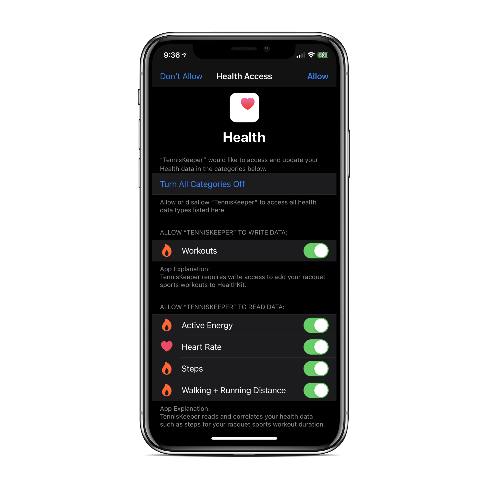

If you allow TennisKeeper to access your Apple Heath data, with your permission, TennisKeeper will read the entries for Steps, Walking + Running Distance and Heart Rate if such data exist. Such data can be created by your Apple Watch or other digital activity trackers that can determine your steps count, distance traveled and heart rate.
TennisKeeper will read, aggregate, and correlate your Apple health data entries to your tennis activities based on the timestamp. For example, if you have logged a singles match on 06/01/2016 from 1:00 - 2:00pm, TennisKeeper will use this timestamp to aggregate the steps you took during this time, the distance you covered on the court, and also your average heart rate. These will be displayed in the Activities Log entry.
With this automation, you will now have a much better understanding of your tennis performance using your existing Apple Health data: Are you moving well on the court? Is your cardiovascular fitness good for tennis?
When you start a tennis activity from your Apple Watch, or when you save a new tennis activity from your iPhone, with your permission, the activity will be added to your Apple Health as a Workout session. If you delete the tennis activity, the Workout session will be automatically removed.
To enable TennisKeeper to access your Apple Health data, when prompted, turn all categories on and tap Allow.

You can also go directly to the Apple Health App and change your preferences any time. For example:
To review your tennis workout sessions:
To see the credit you get from your tennis workout:
See this blog article for additional information.